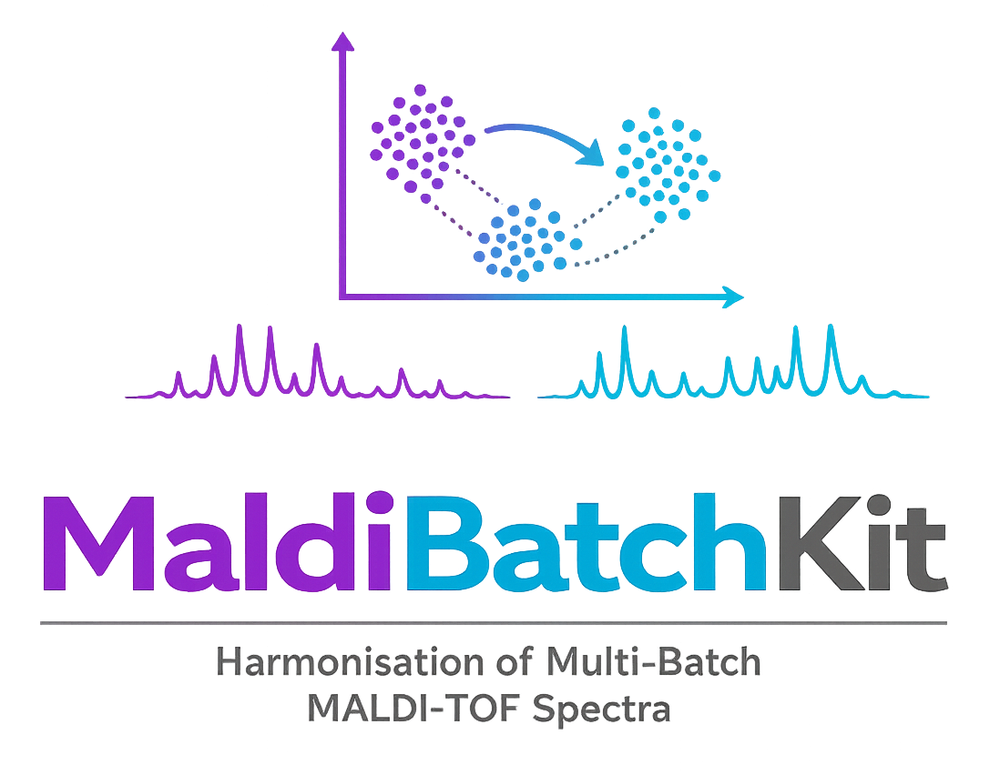
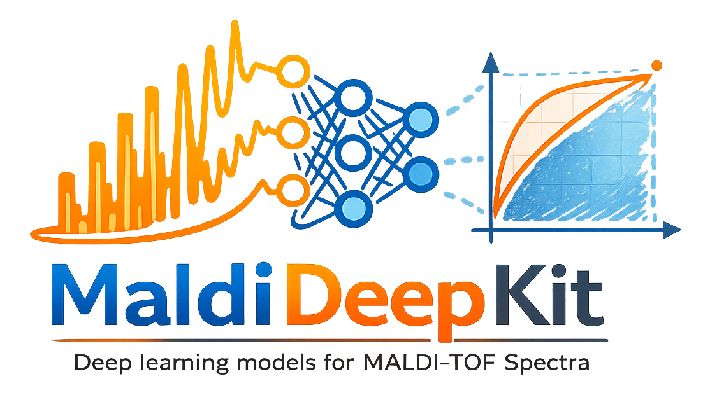

A Python ecosystem for MALDI-TOF spectral processing and analysis in antimicrobial resistance research
Discover more ↓MaldiSuite is an open-source Python ecosystem for MALDI-TOF spectral processing and analysis in antimicrobial resistance research. It bridges a gap between general-purpose mass spectrometry software and research codebases for AMR prediction, providing a production-ready, sklearn-compatible workflow for clinical microbiology and computational biology teams.
The suite brings together three complementary packages that cover the entire pipeline: from raw spectrum preprocessing and clinically aware evaluation, through batch effect correction for multi-site studies, to pre-configured deep learning classifiers adapted to the resolution of MALDI-TOF spectra.
EUCAST and CLSI metrics (VME, ME, categorical agreement) exposed as scikit-learn scorers, with patient-grouped cross-validation to prevent data leakage.
Integrated catalog of generic and MALDI-specific correction methods, addressing site-to-site and instrument-to-instrument variability in clinical settings.
Per-bin statistical analysis with multiple-testing correction, fold-change estimation, and effect-size quantification, paired with publication-ready visualizations.
Longitudinal monitoring of model stability through reference similarity, PCA trajectory, and biomarker stability metrics across time windows.
Four ready-to-use neural network architectures (MLP with optional attention, 1-D CNN, ResNet, and Vision Transformer) with default hyperparameters calibrated for MALDI-TOF spectral resolution.
All transformers and classifiers inherit from the scikit-learn base classes and integrate seamlessly with Pipeline, GridSearchCV, and cross-validation utilities.
Each package addresses a distinct concern with its own dependencies and release cadence. Install them individually, or all together via the meta-package.
Preprocessing, evaluation, biomarkers, drift monitoring
CaseGroupedKFold)pip install maldiamrkit
Batch effect correction for mass spectra
BatchAwareWarping, QualityWeightedComBat, SpeciesAwareComBat)MaldiSetpip install maldibatchkit
Deep learning classifiers for MALDI-TOF spectra
MaldiMLPClassifier - MLP with optional sigmoid-gated attentionMaldiCNNClassifier - 1-D Conv1D + BatchNorm blocksMaldiResNetClassifier - 1-D ResNet-18-style residual blocksMaldiTransformerClassifier - 1-D Vision Transformer (LayerScale, stochastic depth)fit/predict/predict_probafrom_spectrum(bin_width, input_dim) auto-scaling factorypip install maldideepkitFor users who want the entire ecosystem, a convenience meta-package installs all three packages with pinned compatible versions.
pip install maldisuiteAn end-to-end example combining preprocessing, batch correction, deep learning, and patient-grouped evaluation.
from maldiamrkit import MaldiSet
from maldiamrkit.evaluation import CaseGroupedKFold, vme_scorer
from maldibatchkit import BatchAwareWarping, ComBat
from maldideepkit import MaldiMLPClassifier
from sklearn.pipeline import Pipeline
from sklearn.model_selection import cross_val_score
data = MaldiSet.from_directory("driams/", "meta.csv", bin_width=3)
batch = data.meta["batch"]
pipe = Pipeline([
("warp", BatchAwareWarping(batch=batch)),
("combat", ComBat(batch=batch, method="fortin")),
("clf", MaldiMLPClassifier(input_dim=data.X.shape[1], random_state=0)),
])
scores = cross_val_score(
pipe, data.X, data.get_y_single("Drug"),
scoring=vme_scorer,
cv=CaseGroupedKFold(n_splits=5),
groups=data.meta["patient_id"],
)